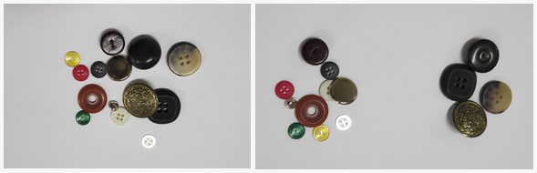
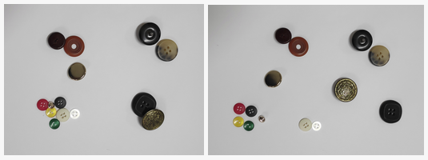
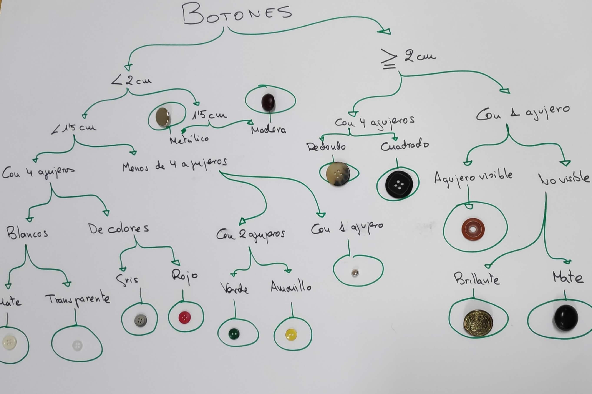
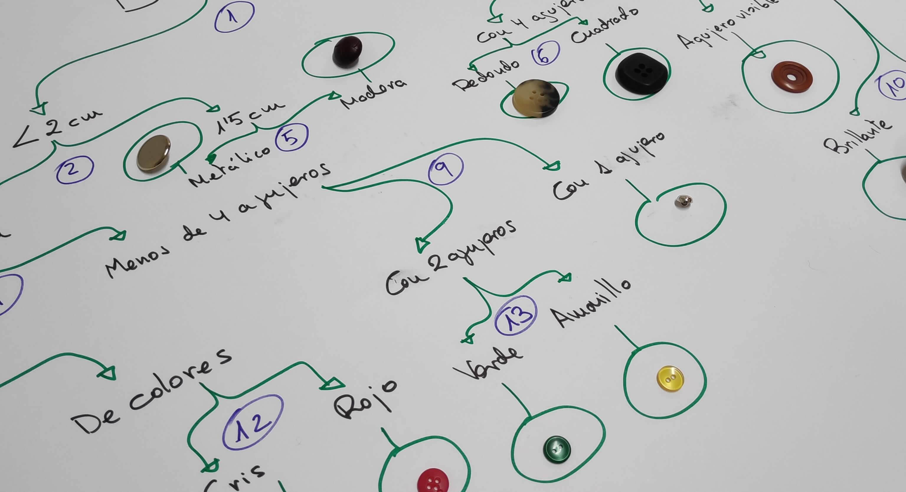

La Taxonomía es la ciencia que sirve para clasificar seres vivos y tiene como herramienta imprescindible las claves dicotómicas. Una clave dicotómica es una herramienta científica, que se utiliza para identificar diferentes organismos, en base a sus rasgos observables. Estas claves consisten en ir pasando el ser vivo que queremos clasificar por un sistema de elección, según sus características, con dos opciones en cada paso, a modo de diagrama de flujo. Cada una de las opciones es lo que se denomina una dicotomía. Según vamos eligiendo una u otra opción, la clave nos va llevando por sucesivas dicotomías, hasta que el organismo queda totalmente aislado, permitiendo así su identificación correcta.
Para entender lo que es una clave dicotómica realizaremos primero simulaciones con objetos y fotografías, para pasar luego a clasificar organismos in situ.
Actividad 2: Creación de tu propia Clave dicotómica de animales vertebrados.
Duración:
3 sesiones
Agrupamiento:
Parejas / Individual
Vamos con la segunda actividad. Ya hemos practicado para hacer una clave dicotómica sencilla para clasificar objetos. El reto ahora es aplicar lo aprendido para construir una guía dicotómica para identificar 30 animales vertebrados. trabajaréis primero en parejas en los ordenadores y posteriormente de forma individual. La secuencia es la siguiente:
Sesión 1: Búsqueda de información sobre las características de los 30 animales vertebrados elegidos. En pareja.
Sesiones 2 y 3: Sesiones individuales de creación de la clave. Individual.
Ejemplo de creación de clave dicotómica: Clasificando botones
Para entender cómo funcionan las claves dicotómicas, vamos a aprender primero a confeccionar una paso a paso, con un objeto tan cotidiano como son los botones. Nos disponemos en grupos para trabajar con este material:
10 botones diferentes
Una cartulina grande A3
Rotuladores de colores
Teléfono móvil
Paso 1: Definir criterios
Para construir una clave dicotómica debemos fijar primero una serie de criterios. En el caso de los botones pueden ser la forma, el color, el tamaño, el material, el brillo u otros que pensemos interesantes para diferenciarlos. Dedicamos unos minutos a pensarlos.
Paso 2: Primera dicotomía

Mª Elvira González y Pilar Etxebarria . Botones 1(CC BY-SA)
Elegimos el criterio que nos parezca más general y comenzamos clasificando los botones en la cartulina A3 según este criterio, haciendo dos primeros grandes bloques. Por ejemplo, si hemos elegido el tamaño, comenzaremos por dividir botones grandes y pequeños.
Paso 3: Sucesivas dicotomías

Mª Elvira González y Pilar Etxebarria . Botones 2(CC BY-SA)
Aplicamos ahora otro criterio en cada bloque, dividiéndolo en otros dos bloques más. Por ejemplo, para el grupo de los botones grandes, podemos elegir de nuevo el tamaño, o el color, el material etc.
Paso 4: Diagrama de flujo
Seguimos de este modo, hasta tener todos los botones uno por uno. Hacemos un círculo en cada uno de los botones individuales. Según vamos haciendo las divisiones de dos en dos bloques, vamos haciendo a la vez , con los rotuladores, un diagrama de flujo.

Mª Elvira González y Pilar Etxebarria . Diagrama de flujo(CC BY-SA)
Paso 5: Numeramos las dicotomías
Una vez que tengamos hecho el diagrama, asignamos números en cada bifurcación y sacamos una fotografía de nuestra clave con el móvil. También podemos pegar los botones a la cartulina A3 y dejarlo como un póster.

Mª Elvira González y Pilar Etxebarria. Botones numerados(CC BY-SA)
Paso 6: Realizar la clave
Con el esquema de números, realizamos la clave. Nos basamos en el siguiente ejemplo de clave sencilla para clasificar vertebrados, simplificada de ésta de la Wikipedia:
En el siguiente vídeo, elaborado por el profesor Arturo Rodríguez, para sus estudiantes, tenemos un tutorial que explica fácilmente el proceso para elaborar claves dicotómicas.